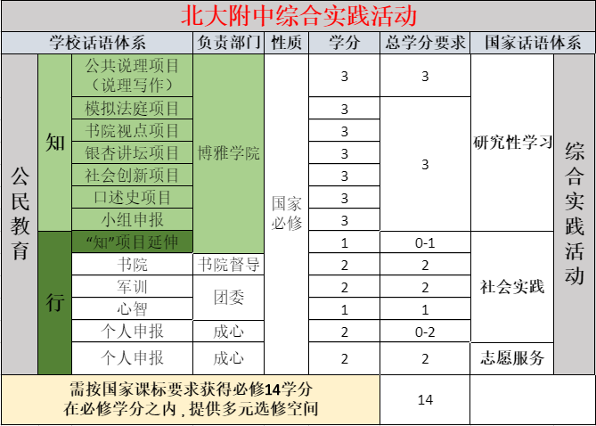

研究性学习
2019年9月起，学院人文项目与综合实践做深度结合，学分对应关系如图：

如上图，学院人文项目学分即北大附中研究性学习学分。
如此设计，需要回答三个问题：
- 人文项目与研究性学习分别是什么？
- 两者关系是什么？结合、对抵是否合理？
- 具体实施方案是什么？
项目式学习&研究性学习
项目式学习（Project-based learning）
尚无共识定义；在教学法上，可直接溯源至McMaster University的Problem-based learning；两者均缩写为PBL。
研究性学习
1999年初，上海教育科学研究院普教所首次正式提出“研究性学习”这一概念。 2000年1月，教育部《全日制普通高级中学课程计划(试验修订稿)》首次列入研究性学习。
研究性学习以学生的自主性、探索性学习为基础，从学生生活和社会生活中选择和确定研究专题，主要以个人或小组合作的方式进行。通过亲身实践获取直接经验，养成科学精神和科学态度，掌握基本的科学方法，提高综合运用所学知识解决实际问题的能力。在研究性学习中，教师是组织者、参与者和指导者。
2001年4月教育部《普通高中“研究性学习”实施指南（试行）》中表述如下：
研究性学习是学生在教师指导下，从自然、社会和生活中选择和确定专题进行研究，并在研究过程中主动地获取知识、应用知识、解决问题的学习活动。 设置研究性学习的目的在于改变学生以单纯地接受教师传授知识为主的学习方式，为学生构建开放的学习环境，提供多渠道获取知识、并将学到的知识加以综合应用于实践的机会，促进他们形成积极的学习态度和良好的学习策略，培养创新精神和实践能力。 学校应根据自身的传统优势和校内外教育资源的状况，形成有地区和学校特点的研究性学习内容，同时为学生根据自己的兴趣、爱好和具体条件，自主选择研究课题留有足够的余地。
2017年国家新课标对研究性学习的表述如下：
“综合实践活动由研究性学习、社会实践和志愿服务三部分组成，主要通过考察探究、社会服务、职业体验等方式进行，由学校统筹规划与实施。综合实践活动共14 学分：研究性学习6学分，完成2个课题研究或项目设计，以开展跨学科研究为主；社会实践6学分，包括党团活动、军训、社会考察、职业体验等；志愿服务2学分，在课外时间进行，三年不少于40小时。
两者来由
如下Problem-based learning最核心特征的描述，正说明了其对真实问题的看重，而非以书面知识作为学习起点。
研究性学习的由来，是在信息化背景下，国家对创新、创造能力有了更高要求。上海推行研究性学习的期望目标，是突破原有的以单科性、学术性为主的框架，开发具有综合性、社会性、实践性特点的新型课程，在培养学生创新精神和时间能力方面形成新的生长点，改变以往偏重只是传授和技能训练的教学方式和被动接受的学习方式，充分发挥学生学习的主动性和创造性。
两者关系是什么？结合、对抵是否合理？
张人红编译，广西教育出版社2001年出版的《国外及港台地区研究性学习资料选编》，目录：
直接对应之外，依上述定义和来由，研究性学习作为概念，所借鉴的，其实正是PBL。两者的核心要素均为：
- 强调综合
- 真实问题
- 教师指导
- 学生自主
- 小组合作
- 知识运用
基于两者要素的高度重合与概念关系的梳理可知，作为概念的研究性学习已经过时，但对其要素的学术讨论，已经转移到项目式学习这个概念之下。 换言之:
项目式学习，其实是研究性学习被学术疲劳之后，一个学科内容与学习方式解弊的更新概念。旧概念到新概念的更迭，是推进落实的一种有效方式；所以，可以预见，随着项目式学习的深入探究，在之后课标的版本更迭下，项目式学习，会逐步取代研究性学习。
“考察探究”、“由学校统筹规划与实施”、“完成2个课题研究或项目设计”、“以开展跨学科研究为主”，是最新版国家课标对研究性学习的明文陈述。 北大附中现有项目在各个核心要素上均与研究性学习高度契合；人文作为一个范畴也并非学科，因此，在新的学年，我们将在北大附中并行了一年的两者做了如上结合、抵换。
具体实施方案是什么？
依照最新版国家课标的表述与研究性学习概念的由来，不应存在某学科的研究性学习，因为该说法显然有悖于概念中“突破原有的以单科性、学术性为主的框架”的初心。
也因此，正本清源，各个学科的拓展研究由各学科继续研发，但不再与校级研究性学习的概念挂钩，不设所谓学科研究性学习；
新一届学生，可以做如下选择：
- 完成公共说理必选之后，选择学校所开设其他项目完成研究性学习。或，
- 每学年开学前一个月，依据该《北大附中项目式学习/研究性学习评价标准》自主申请研学项目，经学院审核通过，并最终验收合格后，作为研究性学习的学分。